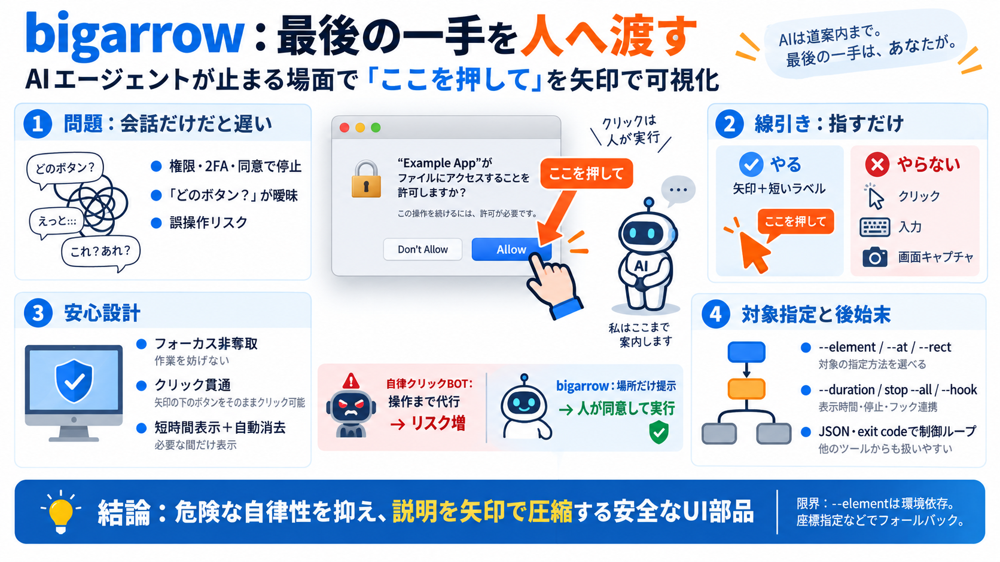

Codex CLI Agent Skills | 2026 Install and Usage Guide | ITECS
Autonomous loops consume tokens rapidly. A typical 50-iteration loop on a medium-sized codebase can cost $50–100 or more…

AIエージェントが止まる「許可・同意・認証」の瞬間に、macOS画面へ矢印とラベルを一時表示して、次の人の操作先を最短で示します。
権限ダイアログ（Allow）、2FA、同意確認など、人間が最後に操作すべき場面でエージェントは止まりがちです。
bigarrowはクリック・入力・画面キャプチャをしません。代わりに「このボタンです」と視覚で一瞬だけ案内します。
矢印の表示がユーザー操作を邪魔しないことが目標です。前面アプリが変わらないことをテストで確認した記述があります。
エージェントが“指し示すべき対象”を外すとズレます。そこで指定方式を複数用意し、安定性を上げる方針です。
“描きっぱなし”を防ぎ、運用負担と事故リスクを下げる仕組みが複数あります。
bigarrowの最大主張は「代理操作しない」ことです。矢印は“説明”ではなく“行動の場所”を指します。
マルチディスプレイ、Space/フルスクリーン、Stage Managerなどの画面状態での動作確認が言及されています。
終了コード（exit code）や--jsonにより、エージェントが次の判断（リトライ、質問、フォールバック）を機械的に行いやすくなります。
信頼の源は、誤操作を減らすUI介入、フォーカス非奪取、後始末、自動終了にあります。
運用イメージを掴むための、主要なQ&Aの短縮版です。
bigarrowは「AIが最後のクリックをやらない」ことで誤操作リスクを抑えつつ、“押す場所”を視覚化する実装部品です。
Autonomous loops consume tokens rapidly. A typical 50-iteration loop on a medium-sized codebase can cost $50–100 or more…
> Quick Answer: There are five main configuration layers for AI agents in 2026: Custom instructions (always-on context),…
`disable-model-invocation: true` `allowed-tools` `/init` `/security-review` `/compact` `/permissions` `# Add to deny rul…
A skill contains: required patterns, ARIA usage, Definition of Done checklist items, and non-obvious gotchas. It does NO…
Slow. 1–4 minutes per image; a repo-wide Codex task can take 10+ minutes. Skills set long Bash timeouts accordingly. Co…